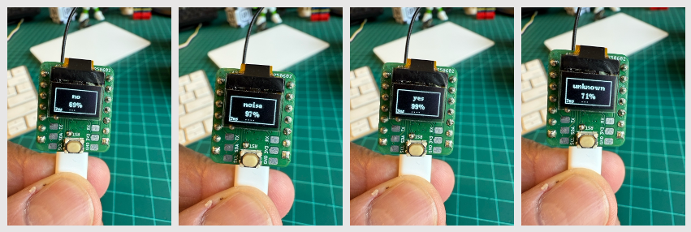

Keyword Spotting (KWS)
{kind=link}
Overview
Keyword Spotting (KWS) is integral to many voice recognition systems, enabling devices to respond to specific words or phrases. While this technology underpins popular devices like Google Assistant or Amazon Alexa, it’s equally applicable and achievable on smaller, low-power devices. This lab will guide you through implementing a KWS system using TinyML on the XIAO ESP32S3 microcontroller board.
The XIAO ESP32S3, equipped with Espressif’s ESP32-S3 chip, is a compact and potent microcontroller offering a dual-core Xtensa LX7 processor, integrated Wi-Fi, and Bluetooth. Its balance of computational power, energy efficiency, and versatile connectivity makes it a fantastic platform for TinyML applications. Also, with its expansion board, we will have access to the “sense” part of the device, which has a camera, an SD card slot, and a digital microphone. The integrated microphone and the SD card will be essential in this project.
We will use the Edge Impulse Studio, a powerful, user-friendly platform that simplifies creating and deploying machine learning models onto edge devices. We’ll train a KWS model step-by-step, optimizing and deploying it onto the XIAO ESP32S3 Sense.
Our model will be designed to recognize keywords that can trigger device wake-up or specific actions (in the case of “YES”), bringing your projects to life with voice-activated commands.
Leveraging our experience with TensorFlow Lite for Microcontrollers (the engine “under the hood” on the EI Studio), we’ll create a KWS system capable of real-time machine learning on the device.
As we progress through the lab, we’ll break down each process stage – from data collection and preparation to model training and deployment – to provide a comprehensive understanding of implementing a KWS system on a microcontroller.
- Understand Voice Assistant Architecture including cascaded detection systems and the role of edge-based keyword spotting as the first stage of voice processing pipelines
- Master Audio Data Collection Techniques using both offline methods (XIAO ESP32S3 microphone with SD card storage) and online methods (smartphone integration with Edge Impulse Studio)
- Implement Digital Signal Processing for Audio including I2S protocol fundamentals, audio sampling at 16kHz/16-bit, and conversion between time-domain audio signals and frequency-domain features using MFCC
- Train Convolutional Neural Networks for Audio Classification using transfer learning techniques, data augmentation strategies, and model optimization for four-class classification (YES, NO, NOISE, UNKNOWN)
- Deploy Optimized Models on Microcontrollers through quantization (INT8), memory management with PSRAM, and real-time inference optimization for embedded systems
- Develop Complete Post-Processing Pipelines including confidence thresholding, GPIO control for external devices, OLED display integration, and creating standalone AI sensor systems
- Compare Development Workflows between no-code platforms (Edge Impulse Studio) and traditional embedded programming (Arduino IDE) for TinyML applications
The KWS Project
How does a voice assistant work?
Keyword Spotting (KWS) is critical to many voice assistants, enabling devices to respond to specific words or phrases. To start, it is essential to realize that Voice Assistants on the market, like Google Home or Amazon Echo-Dot, only react to humans when they are “waked up” by particular keywords such as “ Hey Google” on the first one and “Alexa” on the second.

In other words, recognizing voice commands is based on a multi-stage model or Cascade Detection.

Stage 1: A smaller microprocessor inside the Echo Dot or Google Home continuously listens to the sound, waiting for the keyword to be spotted. For such detection, a TinyML model at the edge is used (KWS application).
Stage 2: Only when triggered by the KWS application on Stage 1 is the data sent to the cloud and processed on a larger model.
The video below shows an example where I emulate a Google Assistant on a Raspberry Pi (Stage 2), having an Arduino Nano 33 BLE as the tinyML device (Stage 1).
If you want to go deeper on the full project, please see my tutorial: Building an Intelligent Voice Assistant From Scratch.
In this lab, we will focus on Stage 1 (KWS or Keyword Spotting), where we will use the XIAO ESP2S3 Sense, which has a digital microphone for spotting the keyword.
The Inference Pipeline
The diagram below will give an idea of how the final KWS application should work (during inference):

Our KWS application will recognize four classes of sound:
- YES (Keyword 1)
- NO (Keyword 2)
- NOISE (no keywords spoken, only background noise is present)
- UNKNOWN (a mix of different words than YES and NO)
Optionally for real-world projects, it is always advised to include different words than keywords, such as “Noise” (or Background) and “Unknown.”
The Machine Learning workflow
The main component of the KWS application is its model. So, we must train such a model with our specific keywords, noise, and other words (the “unknown”):

Dataset
The critical component of Machine Learning Workflow is the dataset. Once we have decided on specific keywords (YES and NO), we can take advantage of the dataset developed by Pete Warden, “Speech Commands: A Dataset for Limited-Vocabulary Speech Recognition.” This dataset has 35 keywords (with +1,000 samples each), such as yes, no, stop, and go. In other words, we can get 1,500 samples of yes and no.
You can download a small portion of the dataset from Edge Studio (Keyword spotting pre-built dataset), which includes samples from the four classes we will use in this project: yes, no, noise, and background. For this, follow the steps below:
- Download the keywords dataset.
- Unzip the file in a location of your choice.
Although we have a lot of data from Pete’s dataset, collecting some words spoken by us is advised. When working with accelerometers, creating a dataset with data captured by the same type of sensor was essential. In the case of sound, the classification differs because it involves, in reality, audio data.
The key difference between sound and audio is their form of energy. Sound is mechanical wave energy (longitudinal sound waves) that propagate through a medium causing variations in pressure within the medium. Audio is made of electrical energy (analog or digital signals) that represent sound electrically.
The sound waves should be converted to audio data when we speak a keyword. The conversion should be done by sampling the signal generated by the microphone in 16 kHz with a 16-bit depth.
So, any device that can generate audio data with this basic specification (16 kHz/16 bits) will work fine. As a device, we can use the proper XIAO ESP32S3 Sense, a computer, or even your mobile phone.

Capturing online Audio Data with Edge Impulse and a smartphone
In the lab Motion Classification and Anomaly Detection, we connect our device directly to Edge Impulse Studio for data capturing (having a sampling frequency of 50 Hz to 100 Hz). For such low frequency, we could use the EI CLI function Data Forwarder, but according to Jan Jongboom, Edge Impulse CTO, audio (16 kHz) goes too fast for the data forwarder to be captured. So, once we have the digital data captured by the microphone, we can turn it into a WAV file to be sent to the Studio via Data Uploader (same as we will do with Pete’s dataset).
If we want to collect audio data directly on the Studio, we can use any smartphone connected online with it. We will not explore this option here, but you can easily follow EI documentation.
Capturing (offline) Audio Data with the XIAO ESP32S3 Sense
The built-in microphone is the MSM261D3526H1CPM, a PDM digital output MEMS microphone with Multi-modes. Internally, it is connected to the ESP32S3 via an I2S bus using pins IO41 (Clock) and IO41 (Data).

What is I2S?
I2S, or Inter-IC Sound, is a standard protocol for transmitting digital audio from one device to another. It was initially developed by Philips Semiconductor (now NXP Semiconductors). It is commonly used in audio devices such as digital signal processors, digital audio processors, and, more recently, microcontrollers with digital audio capabilities (our case here).
The I2S protocol consists of at least three lines:

1. Bit (or Serial) clock line (BCLK or CLK): This line toggles to indicate the start of a new bit of data (pin IO42).
2. Word select line (WS): This line toggles to indicate the start of a new word (left channel or right channel). The Word select clock (WS) frequency defines the sample rate. In our case, L/R on the microphone is set to ground, meaning that we will use only the left channel (mono).
3. Data line (SD): This line carries the audio data (pin IO41)
In an I2S data stream, the data is sent as a sequence of frames, each containing a left-channel word and a right-channel word. This makes I2S particularly suited for transmitting stereo audio data. However, it can also be used for mono or multichannel audio with additional data lines.
Let’s start understanding how to capture raw data using the microphone. Go to the GitHub project and download the sketch: XIAOEsp2s3_Mic_Test:
⚠️ Attention
- The Xiao ESP32S3 MUST have the PSRAM enabled. You can check it on the Arduino IDE upper menu:
Tools–>PSRAM:OPI PSRAM- The Arduino Library (
esp32 by Espressif Systemsshould be version 2.017. Please do not update it.
/*
XIAO ESP32S3 Simple Mic Test
*/
#include <I2S.h>
void setup() {
Serial.begin(115200);
while (!Serial) {
}
// start I2S at 16 kHz with 16-bits per sample
I2S.setAllPins(-1, 42, 41, -1, -1);
if (!I2S.begin(PDM_MONO_MODE, 16000, 16)) {
Serial.println("Failed to initialize I2S!");
while (1); // do nothing
}
}
void loop() {
// read a sample
int sample = I2S.read();
if (sample && sample != -1 && sample != 1) {
Serial.println(sample);
}
}This code is a simple microphone test for the XIAO ESP32S3 using the I2S (Inter-IC Sound) interface. It sets up the I2S interface to capture audio data at a sample rate of 16 kHz with 16 bits per sample and then continuously reads samples from the microphone and prints them to the serial monitor.
Let’s dig into the code’s main parts:
- Include the I2S library: This library provides functions to configure and use the I2S interface, which is a standard for connecting digital audio devices.
- I2S.setAllPins(–1, 42, 41, –1, –1): This sets up the I2S pins. The parameters are (–1, 42, 41, –1, –1), where the second parameter (42) is the PIN for the I2S clock (CLK), and the third parameter (41) is the PIN for the I2S data (DATA) line. The other parameters are set to –1, meaning those pins are not used.
- I2S.begin(PDM_MONO_MODE, 16000, 16): This initializes the I2S interface in Pulse Density Modulation (PDM) mono mode, with a sample rate of 16 kHz and 16 bits per sample. If the initialization fails, an error message is printed, and the program halts.
- int sample = I2S.read(): This reads an audio sample from the I2S interface.
If the sample is valid, it is printed on the Serial Monitor and Plotter.
Below is a test “whispering” in two different tones.

Save Recorded Sound Samples
Let’s use the onboard SD Card reader to save .wav audio files; we must habilitate the XIAO PSRAM first.
ESP32-S3 has only a few hundred kilobytes of internal RAM on the MCU chip. It can be insufficient for some purposes so that ESP32-S3 can use up to 16 MB of external PSRAM (Psuedostatic RAM) connected in parallel with the SPI flash chip. The external memory is incorporated in the memory map and, with certain restrictions, is usable in the same way as internal data RAM.
For a start, Insert the SD Card on the XIAO as shown in the photo below (the SD Card should be formatted to FAT32).

Turn the PSRAM function of the ESP-32 chip on (Arduino IDE): Tools>PSRAM: “OPI PSRAM”>OPI PSRAM

- Download the sketch Wav_Record_dataset, which you can find on the project’s GitHub.
This code records audio using the I2S interface of the Seeed XIAO ESP32S3 Sense board, saves the recording as a.wav file on an SD card, and allows for control of the recording process through commands sent from the serial monitor. The name of the audio file is customizable (it should be the class labels to be used with the training), and multiple recordings can be made, each saved in a new file. The code also includes functionality to increase the volume of the recordings.
Let’s break down the most essential parts of it:
#include <I2S.h>
#include "FS.h"
#include "SD.h"
#include "SPI.h"Those are the necessary libraries for the program. I2S.h allows for audio input, FS.h provides file system handling capabilities, SD.h enables the program to interact with an SD card, and SPI.h handles the SPI communication with the SD card.
#define RECORD_TIME 10
#define SAMPLE_RATE 16000U
#define SAMPLE_BITS 16
#define WAV_HEADER_SIZE 44
#define VOLUME_GAIN 2Here, various constants are defined for the program.
- RECORD_TIME specifies the length of the audio recording in seconds.
- SAMPLE_RATE and SAMPLE_BITS define the audio quality of the recording.
- WAV_HEADER_SIZE specifies the size of the .wav file header.
- VOLUME_GAIN is used to increase the volume of the recording.
int fileNumber = 1;
String baseFileName;
bool isRecording = false;These variables keep track of the current file number (to create unique file names), the base file name, and whether the system is currently recording.
void setup() {
Serial.begin(115200);
while (!Serial);
I2S.setAllPins(-1, 42, 41, -1, -1);
if (!I2S.begin(PDM_MONO_MODE, SAMPLE_RATE, SAMPLE_BITS)) {
Serial.println("Failed to initialize I2S!");
while (1);
}
if(!SD.begin(21)){
Serial.println("Failed to mount SD Card!");
while (1);
}
Serial.printf("Enter with the label name\n");
}The setup function initializes the serial communication, I2S interface for audio input, and SD card interface. If the I2S did not initialize or the SD card fails to mount, it will print an error message and halt execution.
void loop() {
if (Serial.available() > 0) {
String command = Serial.readStringUntil('\n');
command.trim();
if (command == "rec") {
isRecording = true;
} else {
baseFileName = command;
fileNumber = 1; //reset file number each time a new
basefile name is set
Serial.printf("Send rec for starting recording label \n");
}
}
if (isRecording && baseFileName != "") {
String fileName = "/" + baseFileName + "."
+ String(fileNumber) + ".wav";
fileNumber++;
record_wav(fileName);
delay(1000); // delay to avoid recording multiple files
at once
isRecording = false;
}
}In the main loop, the program waits for a command from the serial monitor. If the command is rec, the program starts recording. Otherwise, the command is assumed to be the base name for the .wav files. If it’s currently recording and a base file name is set, it records the audio and saves it as a.wav file. The file names are generated by appending the file number to the base file name.
void record_wav(String fileName)
{
...
File file = SD.open(fileName.c_str(), FILE_WRITE);
...
rec_buffer = (uint8_t *)ps_malloc(record_size);
...
esp_i2s::i2s_read(esp_i2s::I2S_NUM_0,
rec_buffer,
record_size,
&sample_size,
portMAX_DELAY);
...
}This function records audio and saves it as a.wav file with the given name. It starts by initializing the sample_size and record_size variables. record_size is calculated based on the sample rate, size, and desired recording time. Let’s dig into the essential sections;
File file = SD.open(fileName.c_str(), FILE_WRITE);
// Write the header to the WAV file
uint8_t wav_header[WAV_HEADER_SIZE];
generate_wav_header(wav_header, record_size, SAMPLE_RATE);
file.write(wav_header, WAV_HEADER_SIZE);This section of the code opens the file on the SD card for writing and then generates the .wav file header using the generate_wav_header function. It then writes the header to the file.
// PSRAM malloc for recording
rec_buffer = (uint8_t *)ps_malloc(record_size);
if (rec_buffer == NULL) {
Serial.printf("malloc failed!\n");
while(1) ;
}
Serial.printf("Buffer: %d bytes\n", ESP.getPsramSize()
- ESP.getFreePsram());The ps_malloc function allocates memory in the PSRAM for the recording. If the allocation fails (i.e., rec_buffer is NULL), it prints an error message and halts execution.
// Start recording
esp_i2s::i2s_read(esp_i2s::I2S_NUM_0,
rec_buffer,
record_size,
&sample_size,
portMAX_DELAY);
if (sample_size == 0) {
Serial.printf("Record Failed!\n");
} else {
Serial.printf("Record %d bytes\n", sample_size);
}The i2s_read function reads audio data from the microphone into rec_buffer. It prints an error message if no data is read (sample_size is 0).
// Increase volume
for (uint32_t i = 0; i < sample_size; i += SAMPLE_BITS/8) {
(*(uint16_t *)(rec_buffer+i)) <<= VOLUME_GAIN;
}This section of the code increases the recording volume by shifting the sample values by VOLUME_GAIN.
// Write data to the WAV file
Serial.printf("Writing to the file ...\n");
if (file.write(rec_buffer, record_size) != record_size)
Serial.printf("Write file Failed!\n");
free(rec_buffer);
file.close();
Serial.printf("Recording complete: \n");
Serial.printf("Send rec for a new sample or enter
a new label\n\n");Finally, the audio data is written to the .wav file. If the write operation fails, it prints an error message. After writing, the memory allocated for rec_buffer is freed, and the file is closed. The function finishes by printing a completion message and prompting the user to send a new command.
void generate_wav_header(uint8_t *wav_header,
uint32_t wav_size,
uint32_t sample_rate)
{
...
memcpy(wav_header, set_wav_header, sizeof(set_wav_header));
}The generate_wav_header function creates a.wav file header based on the parameters (wav_size and sample_rate). It generates an array of bytes according to the .wav file format, which includes fields for the file size, audio format, number of channels, sample rate, byte rate, block alignment, bits per sample, and data size. The generated header is then copied into the wav_header array passed to the function.
Now, upload the code to the XIAO and get samples from the keywords (yes and no). You can also capture noise and other words.
The Serial monitor will prompt you to receive the label to be recorded.

Send the label (for example, yes). The program will wait for another command: rec

And the program will start recording new samples every time a command rec is sent. The files will be saved as yes.1.wav, yes.2.wav, yes.3.wav, etc., until a new label (for example, no) is sent. In this case, you should send the command rec for each new sample, which will be saved as no.1.wav, no.2.wav, no.3.wav, etc.

Ultimately, we will get the saved files on the SD card.

The files are ready to be uploaded to Edge Impulse Studio
Capturing (offline) Audio Data Apps
There are many ways to capture audio data; the simplest one is to use a mobile phone or a PC as a connected device on the Edge Impulse Studio.
The PC or smartphone should capture audio data with a sampling frequency of 16 kHz and a bit depth of 16 Bits.
Another alternative is to use dedicated apps. A good app for that is Voice Recorder Pro (IOS). You should save your records as .wav files and send them to your computer.

Training model with Edge Impulse Studio
Uploading the Data
When the raw dataset is defined and collected (Pete’s dataset + recorded keywords), we should initiate a new project at Edge Impulse Studio:

Once the project is created, select the Upload Existing Data tool in the Data Acquisition section. Choose the files to be uploaded:

And upload them to the Studio (You can automatically split data in train/test). Repeat to all classes and all raw data.

The samples will now appear in the Data acquisition section.

All data on Pete’s dataset have a 1 s length, but the samples recorded in the previous section have 10 s and must be split into 1s samples to be compatible.
Click on three dots after the sample name and select Split sample.

Once inside the tool, split the data into 1-second records. If necessary, add or remove segments:

This procedure should be repeated for all samples.
Note: For longer audio files (minutes), first, split into 10-second segments and after that, use the tool again to get the final 1-second splits.
Suppose we do not split data automatically in train/test during upload. In that case, we can do it manually (using the three dots menu, moving samples individually) or using Perform Train / Test Split on Dashboard – Danger Zone.
We can optionally check all datasets using the tab Data Explorer.
Creating Impulse (Pre-Process / Model definition)
An impulse takes raw data, uses signal processing to extract features, and then uses a learning block to classify new data.

First, we will take the data points with a 1-second window, augmenting the data, sliding that window each 500 ms. Note that the option zero-pad data is set. It is essential to fill with zeros samples smaller than 1 second (in some cases, I reduced the 1000 ms window on the split tool to avoid noises and spikes).
Each 1-second audio sample should be pre-processed and converted to an image (for example, \(13\times 49\times 1\)). We will use MFCC, which extracts features from audio signals using Mel Frequency Cepstral Coefficients, which are great for the human voice.

Next, we select KERAS for classification and build our model from scratch by doing Image Classification using Convolution Neural Network).
Pre-Processing (MFCC)
The next step is to create the images to be trained in the next phase:
We can keep the default parameter values or take advantage of the DSP Autotuneparameters option, which we will do.

The result will not spend much memory to pre-process data (only 16KB). Still, the estimated processing time is high, 675 ms for an Espressif ESP-EYE (the closest reference available), with a 240 kHz clock (same as our device), but with a smaller CPU (XTensa LX6, versus the LX7 on the ESP32S). The real inference time should be smaller.
Suppose we need to reduce the inference time later. In that case, we should return to the pre-processing stage and, for example, reduce the FFT length to 256, change the Number of coefficients, or another parameter.
For now, let’s keep the parameters defined by the Autotuning tool. Save parameters and generate the features.

If you want to go further with converting temporal serial data into images using FFT, Spectrogram, etc., you can play with this CoLab: Audio Raw Data Analysis.
Model Design and Training
We will use a Convolution Neural Network (CNN) model. The basic architecture is defined with two blocks of Conv1D + MaxPooling (with 8 and 16 neurons, respectively) and a 0.25 Dropout. And on the last layer, after Flattening four neurons, one for each class:

As hyper-parameters, we will have a Learning Rate of 0.005 and a model that will be trained by 100 epochs. We will also include data augmentation, as some noise. The result seems OK:

If you want to understand what is happening “under the hood,” you can download the dataset and run a Jupyter Notebook playing with the code. For example, you can analyze the accuracy by each epoch:

This CoLab Notebook can explain how you can go further: KWS Classifier Project - Looking “Under the hood Training/xiao_esp32s3_keyword_spotting_project_nn_classifier.ipynb).”
Testing
Testing the model with the data put apart before training (Test Data), we got an accuracy of approximately 87%.

Inspecting the F1 score, we can see that for YES, we got 0.95, an excellent result once we used this keyword to “trigger” our postprocessing stage (turn on the built-in LED). Even for NO, we got 0.90. The worst result is for unknown, what is OK.
We can proceed with the project, but it is possible to perform Live Classification using a smartphone before deployment on our device. Go to the Live Classification section and click on Connect a Development board:

Point your phone to the barcode and select the link.

Your phone will be connected to the Studio. Select the option Classification on the app, and when it is running, start testing your keywords, confirming that the model is working with live and real data:

Deploy and Inference
The Studio will package all the needed libraries, preprocessing functions, and trained models, downloading them to your computer. Select the Arduino Library option, then choose Quantized (Int8) from the bottom menu and press Build.

Now it is time for a real test. We will make inferences wholly disconnected from the Studio. Let’s change one of the ESP32 code examples created when you deploy the Arduino Library.
In your Arduino IDE, go to the File/Examples tab look for your project, and select esp32/esp32_microphone:

This code was created for the ESP-EYE built-in microphone, which should be adapted for our device.
Start changing the libraries to handle the I2S bus:

By:
#include <I2S.h>
#define SAMPLE_RATE 16000U
#define SAMPLE_BITS 16Initialize the IS2 microphone at setup(), including the lines:
void setup()
{
...
I2S.setAllPins(-1, 42, 41, -1, -1);
if (!I2S.begin(PDM_MONO_MODE, SAMPLE_RATE, SAMPLE_BITS)) {
Serial.println("Failed to initialize I2S!");
while (1) ;
...
}On the static void capture_samples(void* arg) function, replace the line 153 that reads data from I2S mic:

By:
/* read data at once from i2s */
esp_i2s::i2s_read(esp_i2s::I2S_NUM_0,
(void*)sampleBuffer,
i2s_bytes_to_read,
&bytes_read, 100);On function static bool microphone_inference_start(uint32_t n_samples), we should comment or delete lines 198 to 200, where the microphone initialization function is called. This is unnecessary because the I2S microphone was already initialized during the setup().

Finally, on static void microphone_inference_end(void) function, replace line 243:

By:
static void microphone_inference_end(void)
{
free(sampleBuffer);
ei_free(inference.buffer);
}You can find the complete code on the project’s GitHub. Upload the sketch to your board and test some real inferences:
⚠️ Attention
- The Xiao ESP32S3 MUST have the PSRAM enabled. You can check it on the Arduino IDE upper menu:
Tools–>PSRAM:OPI PSRAM- The Arduino Library (
esp32 by Espressif Systemsshould be version 2.017. Please do not update it.

Postprocessing
In edge AI applications, the inference result is only as valuable as our ability to act upon it. While serial output provides detailed information for debugging and development, real-world deployments require immediate, human-readable feedback that doesn’t depend on external monitors or connections.
Let’s explore two post-processing approaches. Using the internal XIAO’s LED and the OLED on the XIAOML Kit.
With LED
Now that we know the model is working by detecting our keywords, let’s modify the code to see the internal LED go on every time a YES is detected.
You should initialize the LED:
#define LED_BUILT_IN 21
...
void setup()
{
...
pinMode(LED_BUILT_IN, OUTPUT); // Set the pin as output
digitalWrite(LED_BUILT_IN, HIGH); //Turn off
...
}And change the // print the predictions portion of the previous code (on loop():
int pred_index = 0; // Initialize pred_index
float pred_value = 0; // Initialize pred_value
// print the predictions
ei_printf("Predictions ");
ei_printf("(DSP: %d ms., Classification: %d ms., Anomaly: %d ms.)",
result.timing.dsp, result.timing.classification,
result.timing.anomaly);
ei_printf(": \n");
for (size_t ix = 0; ix < EI_CLASSIFIER_LABEL_COUNT; ix++) {
ei_printf(" %s: ", result.classification[ix].label);
ei_printf_float(result.classification[ix].value);
ei_printf("\n");
if (result.classification[ix].value > pred_value){
pred_index = ix;
pred_value = result.classification[ix].value;
}
}
// show the inference result on LED
if (pred_index == 3){
digitalWrite(LED_BUILT_IN, LOW); //Turn on
}
else{
digitalWrite(LED_BUILT_IN, HIGH); //Turn off
}You can find the complete code on the project’s GitHub. Upload the sketch to your board and test some real inferences:

The idea is that the LED will be ON whenever the keyword YES is detected. In the same way, instead of turning on an LED, this could be a “trigger” for an external device, as we saw in the introduction.
With OLED Display
The XIAOML Kit tiny 0.42” OLED display (72×40 pixels) serves as a crucial post-processing component that transforms raw ML inference results into immediate, human-readable feedback—displaying detected class names and confidence levels directly on the device, eliminating the need for external monitors and enabling truly standalone edge AI deployment in industrial, agricultural, or retail environments where instant visual confirmation of AI predictions is essential.
So, let’s modify the sketch to automatically adapt to the model trained on Edge Impulse by reading the class names and count directly from the model. Download the code from GitHub: xiaoml-kit_kws_oled.
Running the code, we can see the result:

Summary
This lab demonstrated the complete development cycle of a keyword spotting system using the XIAOML Kit, showcasing how modern TinyML platforms make sophisticated audio AI accessible on resource-constrained devices. Through hands-on implementation, we’ve bridged the gap between theoretical machine learning concepts and practical embedded AI deployment.
Technical Achievements:
The project successfully implemented a complete audio processing pipeline from raw sound capture through real-time inference. Using the XIAO ESP32S3’s integrated digital microphone, we captured audio data at professional quality (16kHz/16-bit) and processed it using Mel Frequency Cepstral Coefficients (MFCC) for feature extraction. The deployed CNN model achieved excellent accuracy in distinguishing between our target keywords (“YES”, “NO”) and background conditions (“NOISE”, “UNKNOWN”), with inference times suitable for real-time applications.
Platform Integration:
Edge Impulse Studio proved invaluable as a comprehensive MLOps platform for embedded systems, handling everything from data collection and labeling through model training, optimization, and deployment. The seamless integration between cloud-based training and edge deployment exemplifies modern TinyML workflows, while the Arduino IDE provided the flexibility needed for custom post-processing implementations.
Real-World Applications:
The techniques learned extend far beyond simple keyword detection. Voice-activated control systems, industrial safety monitoring through sound classification, medical applications for respiratory analysis, and environmental monitoring for wildlife or equipment sounds all leverage similar audio processing approaches. The cascaded detection architecture demonstrated here—using edge-based KWS to trigger more complex cloud processing—is fundamental to modern voice assistant systems.
Embedded AI Principles:
This project highlighted crucial TinyML considerations, including power management, memory optimization through PSRAM utilization, and the trade-offs between model complexity and inference speed. The successful deployment of a neural network performing real-time audio analysis on a microcontroller demonstrates how AI capabilities, once requiring powerful desktop computers, can now operate on battery-powered devices.
Development Methodology:
We explored multiple development pathways, from data collection strategies (offline SD card storage versus online streaming) to deployment options (Edge Impulse’s automated library generation versus custom Arduino implementation). This flexibility is crucial for adapting to various project requirements and constraints.
Future Directions:
The foundation established here enables the exploration of more advanced audio AI applications. Multi-keyword recognition, speaker identification, emotion detection from voice, and environmental sound classification all build upon the same core techniques. The integration capabilities demonstrated with OLED displays and GPIO control illustrate how KWS can serve as the intelligent interface for broader IoT systems.
Consider that Sound Classification encompasses much more than just voice recognition. This project’s techniques apply across numerous domains:
- Security Applications: Broken glass detection, intrusion monitoring, gunshot detection
- Industrial IoT: Machinery health monitoring, anomaly detection in manufacturing equipment
- Healthcare: Sleep disorder monitoring, respiratory condition assessment, elderly care systems
- Environmental Monitoring: Wildlife tracking, urban noise analysis, smart building acoustic management
- Smart Home Integration: Multi-room voice control, appliance status monitoring through sound signatures
Key Takeaways:
The XIAOML Kit proves that professional-grade AI development is achievable with accessible tools and modest budgets. The combination of capable hardware (ESP32S3 with PSRAM and integrated sensors), mature development platforms (Edge Impulse Studio), and comprehensive software libraries creates an environment where complex AI concepts become tangible, working systems.
This lab demonstrates that the future of AI isn’t just in massive data centers, but in intelligent edge devices that can process, understand, and respond to their environment in real-time—opening possibilities for ubiquitous, privacy-preserving, and responsive artificial intelligence systems.